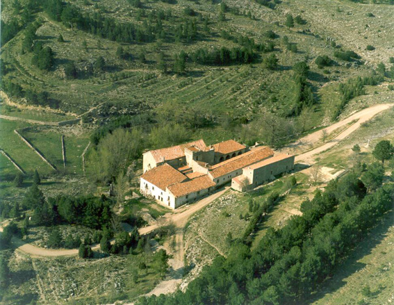
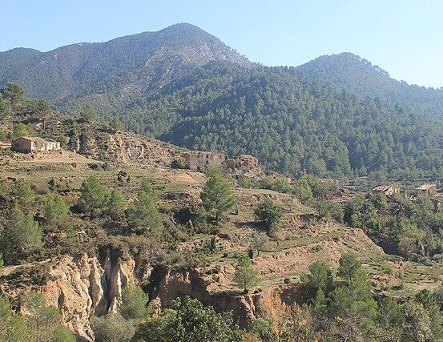
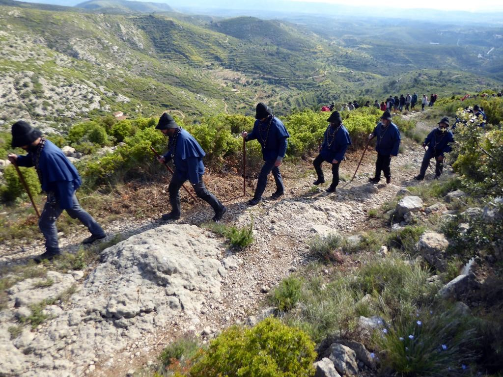
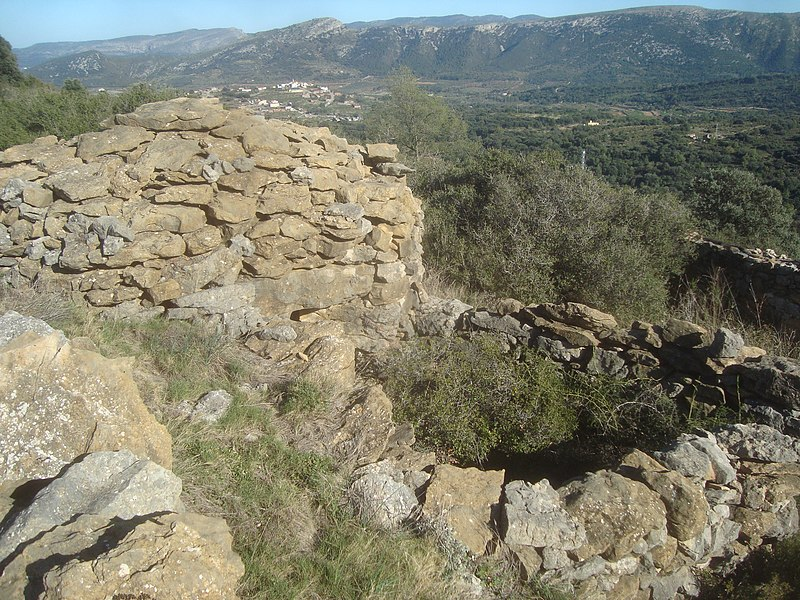

L'origen del topònim Penyagolosa es perd en el temps, però sembla que procedeix de l'evolució metatètica
del terme pinna (muntanya) i lucosa (boscós), segons alguns documents, com el relatiu a la donació de
Culla a l'Ordre del Temple el 1213. Al voltant d'aquesta muntanya hi ha una
gran quantitat de vestigis dels pobles que van habitar i transitar la zona. Així, s'hi poden trobar assentaments
ibers, restes de calçades romanes, i s'aprecien també els signes actuals de despoblament, la qual cosa implica una
pèrdua progressiva del valor cultural i històric d'aquest territori.
Un dels elements destacats de la zona és l'ermitori de Sant Joan Baptista de Penyagolosa i Santa Bàrbara,
un antic convent de cenobites, que forma part d'un conjunt arquitectònic d'estil neoclàssic amb origen
al segle XIV, tot i que la seva estructura actual data principalment del segle XVII. Aquest santuari és
el centre de nombrosos esdeveniments anuals, entre els quals destaca la tradicional romeria dels
Pelegrins de les Useres. A més d'aquesta, altres pelegrinatges parteixen de municipis propers com
Vistabella, Culla, Xodos i Puertomingalvo.
Dins del patrimoni cultural de Penyagolosa, també cal destacar les construccions tradicionals del medi
rural, com els masos i edificacions associades (ocells, eres, corrals, etc.), que conformen un conjunt
de gran valor històric. A més, les construccions de pedra seca, com murs i casetes, són part del
paisatge característic de l'entorn i reforcen el seu valor cultural i patrimonial.
Imatges del patrimoni del parc

Ermitori de Sant Joan Baptista

Mas de Bibioj

Peregrins de les Useres

Construcció de pedra seca
Vídeos
Documental emès per À Punt Mèdia que explica la romeria dels peregrins de les Useres
Vídeo amb imatges del massís de Penyagolosa amb la cançó popular dedicada a Penyagolosa i interpreta pel grup Els Llauradors.